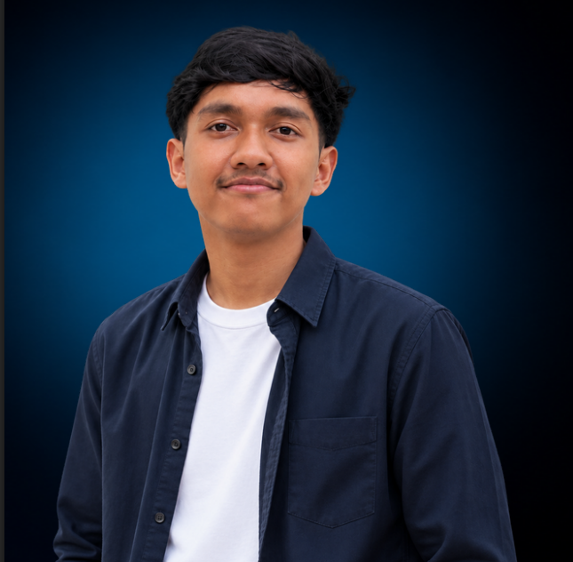

VIDEO EDITOR & GRAPHIC DESIGNER
FARIDH HILALBY
I am a fresh graduate in Multimedia Engineering Technology from Politeknik Negeri Lhokseumawe. I focus on video editing and graphic design, with experience gained through internship activities and various visual projects. I have experience in video editing, graphic design, and digital media production, including creating visual content for social media and digital platforms.
SOFTWARE MASTERY
Premiere Pro
95%
Lightroom
90%
CapCut
95%
Canva
93%

CREATIVE MULTIMEDIA